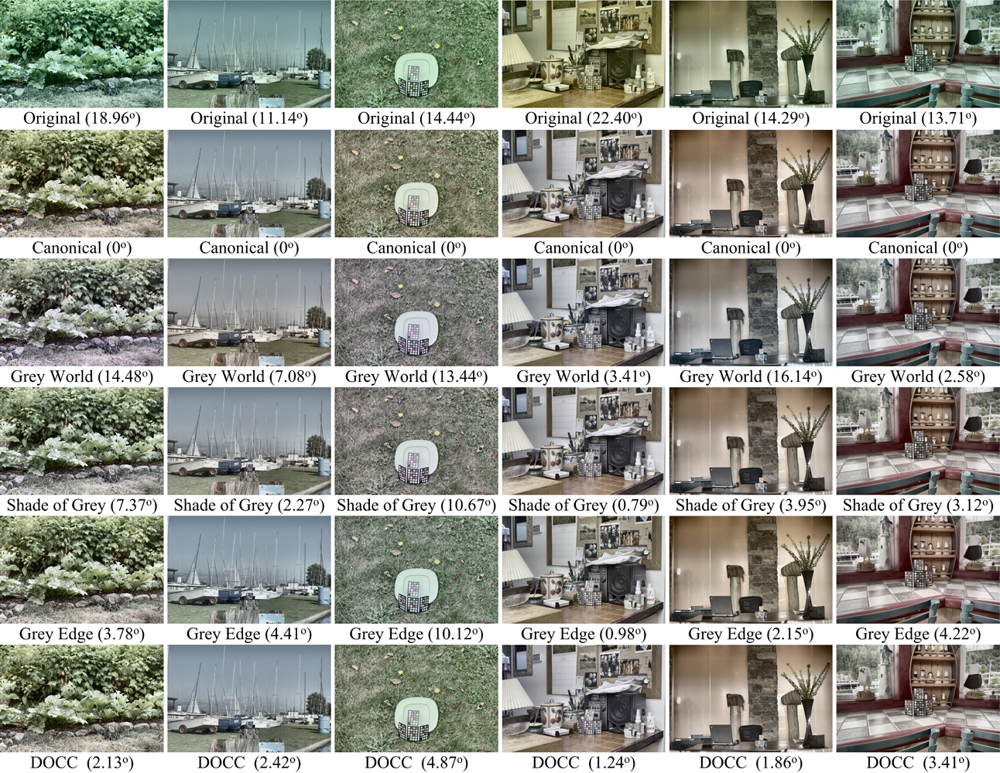
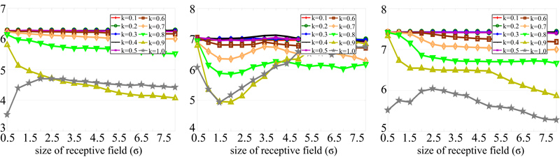

Color Constancy Using Double-OpponencyShaobing Gao, Kaifu Yang, Chaoyi Li, Yongjie Li*
University of Electronic Science and Technology of China Shanghai Institutes for Biological Sciences, CAS |
|
|
AbstractThe double-opponent (DO) color-sensitive cells in the primary visual cortex (V1) of the human visual system (HVS) have long been recognized as the physiological basis of color constancy. In this work we propose a new color constancy model by imitating the functional properties of the HVS from the single-opponent (SO) cells in retina to the DO cells in V1 and the possible neurons in higher visual cortexes. The idea behind the proposed double-opponency based color constancy (DOCC) model originates from the substantial observation that the color distribution of the responses of DO cells to the color-biased images coincides well with the vector denoting the light source color. Then the illuminant color is easily estimated by pooling the responses of DO cells in separate channels in LMS space with the pooling mechanism of sum or max. Extensive evaluations on three commonly used datasets, including with the dataset dependent optimal parameters, as well as the intra- and inter-dataset cross validation, show that our physiologically inspired DOCC model can produce quite competitive results in comparison to the state-of-the-art approaches, but with a relative simple implementation and without the need for explicit training. |
||
ResultsSome examples of indoor and outdoor images from SFU HDR dataset corrected with mutiple methods.Those HDR images are firstly processed by color constancy algorithms and then re-rendered by tone mapping for display |
||
| 
The influence of receptive field size (σ) and the cone weight (k) of our model (DOCC-LMS(sum)) on the measure of median angular error. Left: Gehler-Shi dataset, middle: SFU lab dataset, right: SFU HDR dataset.For experimental evaluation, in this study we respectively set k = 1.0, 1.0, 1.0 and σ = 0.5, 1.5, 8.0 for Gehler-Shi dataset, SFU lab dataset, and SFU HDR dataset. |
||
Citation & Download
DOCC code: Codes Downloadwe experimentally evaluated our DOCC algorithm on Color Checker, SFUlab and SFU HDR datasets by setting parameter k=0.1:0.1:1.0 and sigma=0.5:0.5:8.0, respectively. The real illuminant and results of proposed methods are avilable: Color Checker (Gehler-Shi) datasetSFUlab datasetSFU HDR datasetReference:
|
||
|
Back to ViCBiC Projects Page |
|
latest update： 02-Aug-2014 |